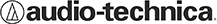
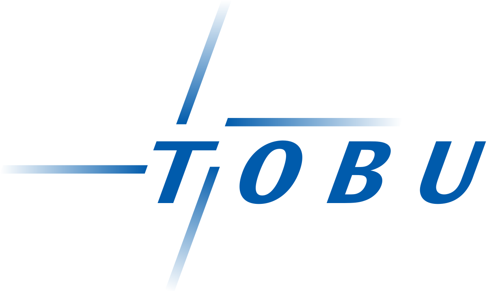
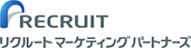
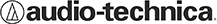
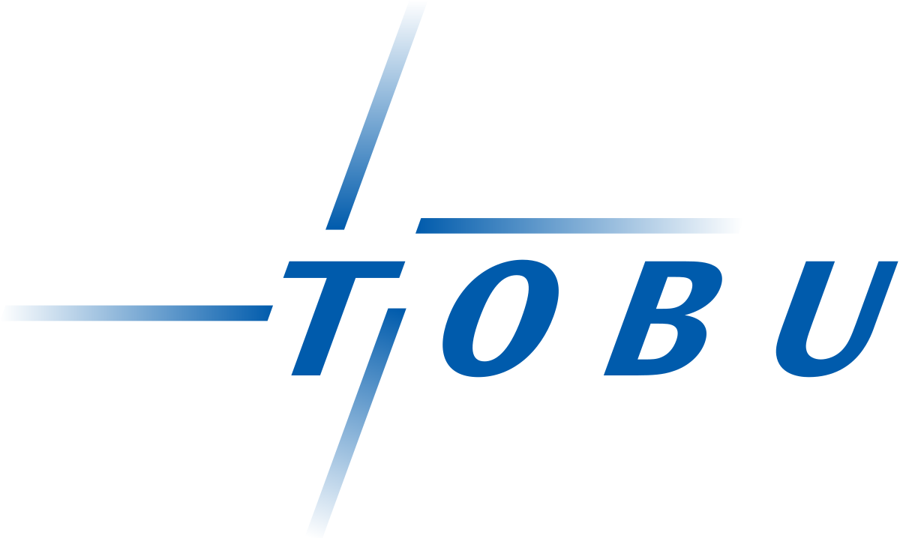
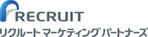

Trend's Castingの特徴
01 コストパフォーマンス
芸能人の起用コストは依頼する代理店やキャスティング会社によって大きく異なります。時には、想定外の金額を提示されることも・・・ BRUTUSの場合、芸能事務所だから分かるコスト感覚で交渉を行うため、メジャー芸能人を適正なコスト感でご提示が可能です。
02 芸能コネクション
最新の情報や、キャスティングまでのスピードやノウハウなどタレントのキャスティングにまつわる全てをこれまでBRUTUSが培ってきた芸能コネクションを活用し、スムーズに進行致します。
03 デジタル企画力
タレントを起用する効果を最大化するために、時にはインスタグラマーやYoutuber、TikTokerなどのインフルエンサーや、テレビディレクター、放送作家などクリエイターから協力を受けて企画を制作。エンタメ目線からデジタルで、D2Cの分野で、タレント起用の効果を最大化する企画をセットでご提案致します。
取引実績
 





キャスティング事例
case01 某ECサイト
訴求したいサービスのターゲットに対して、好感度が高いモデルをアサイン。同時に実際のパートナーをアサインすることで話題に！ さらに、SNSのタグ設計を実施し認知向上
→施策実施後、ワード検索率
180％UP！
case02 某化粧品企業
WebLPの広告モデルとして、ドラマ・バラエティーで活躍する女優をアサイン。産後復帰に併せて起用したことで話題性がアップ。SNS投稿、アフィリエイト施策を実施。
→施策実施後、CVR
160％UP!
case03 某健康食品会社
インフィード広告記事LPと連動したアンバサダーキャスティングを実施。広告記事LPでのインタビューとSNS投稿で商品認知を向上。
→施策実施後、CVRとCVAが
200％UP!